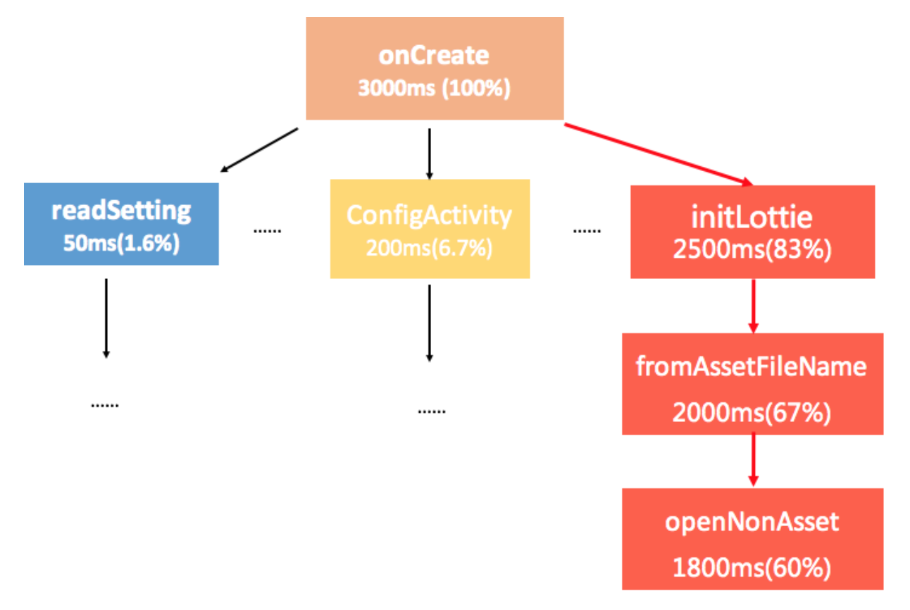
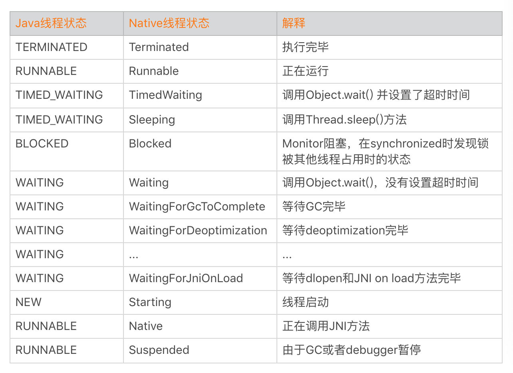
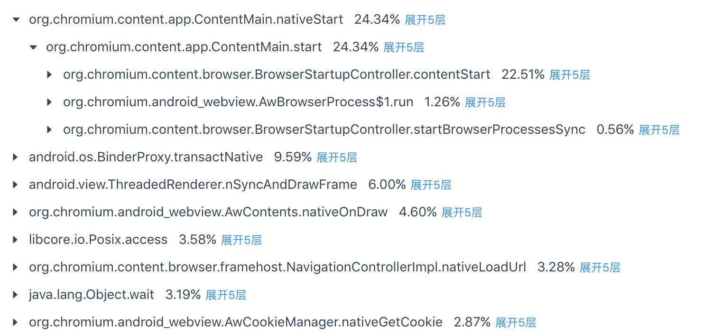

- 00 导读 如何打造高质量的应用？.md
- 00 开篇词 焦虑的移动开发者该如何破局？.md
- 01 崩溃优化（上）：关于“崩溃”那些事儿.md
- 02 崩溃优化（下）：应用崩溃了，你应该如何去分析？.md
- 03 内存优化（上）：4GB内存时代，再谈内存优化.md
- 04 内存优化（下）：内存优化这件事，应该从哪里着手？.md
- 05 卡顿优化（上）：你要掌握的卡顿分析方法.md
- 06 卡顿优化（下）：如何监控应用卡顿？.md
- 06补充篇 卡顿优化：卡顿现场与卡顿分析.md
- 07 启动优化（上）：从启动过程看启动速度优化.md
- 08 启动优化（下）：优化启动速度的进阶方法.md
- 09 I_O优化（上）：开发工程师必备的I_O优化知识.md
- 10 I_O优化（中）：不同I_O方式的使用场景是什么？.md
- 11 I_O优化（下）：如何监控线上I_O操作？.md
- 12 存储优化（上）：常见的数据存储方法有哪些？.md
- 13 存储优化（中）：如何优化数据存储？.md
- 14 存储优化（下）：数据库SQLite的使用和优化.md
- 15 网络优化（上）：移动开发工程师必备的网络优化知识.md
- 16 网络优化（中）：复杂多变的移动网络该如何优化？.md
- 17 网络优化（下）：大数据下网络该如何监控？.md
- 18 耗电优化（上）：从电量优化的演进看耗电分析.md
- 19 耗电优化（下）：耗电的优化方法与线上监控.md
- 20 UI 优化（上）：UI 渲染的几个关键概念.md
- 21 UI 优化（下）：如何优化 UI 渲染？.md
- 22 包体积优化（上）：如何减少安装包大小？.md
- 23 包体积优化（下）：资源优化的进阶实践.md
- 24 想成为Android高手，你需要先搞定这三个问题.md
- 25 如何提升组织与个人的研发效能？.md
- 26 关于编译，你需要了解什么？.md
- 27 编译插桩的三种方法：AspectJ、ASM、ReDex.md
- 28 大数据与AI，如何高效地测试？.md
- 29 从每月到每天，如何给版本发布提速？.md
- 30 数据评估（上）：如何实现高可用的上报组件？.md
- 31 数据评估（下）：什么是大数据平台？.md
- 32 线上疑难问题该如何排查和跟踪？.md
- 33 做一名有高度的移动开发工程师.md
- 34 聊聊重构：优秀的架构都是演进而来的.md
- 35 Native Hook 技术，天使还是魔鬼？.md
- 36 跨平台开发的现状与应用.md
- 37 移动开发新大陆：工作三年半，移动开发转型手游开发.md
- 38 移动开发新大陆：Android音视频开发.md
- 39 移动开发新大陆： 边缘智能计算的趋势.md
- 40 动态化实践，如何选择适合自己的方案？.md
- 41 聊聊Flutter，面对层出不穷的新技术该如何跟进？.md
- 42 Android开发高手课学习心得.md
- Android JVM TI机制详解（内含福利彩蛋）.md
- Android工程师的“面试指南”.md
- Native下如何获取调用栈？.md
- 专栏学得苦？可能你还需要一份配套学习书单.md
- 专栏学得苦？可能是方法没找对.md
- 程序员修炼之路 设计能力的提升途径.md
- 练习Sample跑起来 ASM插桩强化练习.md
- 练习Sample跑起来 唯鹿同学的练习手记 第1辑.md
- 练习Sample跑起来 唯鹿同学的练习手记 第2辑.md
- 练习Sample跑起来 唯鹿同学的练习手记 第3辑.md
- 练习Sample跑起来 热点问题答疑第1期.md
- 练习Sample跑起来 热点问题答疑第2期.md
- 练习Sample跑起来 热点问题答疑第3期.md
- 练习Sample跑起来 热点问题答疑第4期.md
- 结束语 移动开发的今天和明天.md
- 聊聊Framework的学习方法.md
06补充篇 卡顿优化：卡顿现场与卡顿分析
我们使用上一期所讲的插桩或者Profilo的方案，可以得到卡顿过程所有运行函数的耗时。在大部分情况下，这几种方案的确非常好用，可以让我们更加明确真正的卡顿点在哪里。
但是，你肯定还遇到过很多莫名其妙的卡顿，比如读取1KB的文件、读取很小的asset资源或者只是简单的创建一个目录。
为什么看起来这么简单的操作也会耗费那么长的时间呢？那我们如何通过收集更加丰富的卡顿现场信息，进一步定位并排查问题呢？
卡顿现场
我先来举一个线上曾经发现的卡顿例子，下面是它的具体耗时信息。

从图上看，Activity的onCreate函数耗时达到3秒，而其中Lottie动画中openNonAsset函数耗时竟然将近2秒。尽管是读取一个30KB的资源文件，但是它的耗时真的会有那么长吗？
今天我们就一起来分析这个问题吧。
1. Java实现
进一步分析openNonAsset相关源码的时候发现，AssetManager内部有大量的synchronized锁。首先我怀疑还是锁的问题，接下来需要把卡顿时各个线程的状态以及堆栈收集起来做进一步分析。
步骤一：获得Java线程状态
通过Thread的getState方法可以获取线程状态，当时主线程果然是BLOCKED状态。
什么是BLOCKED状态呢？当线程无法获取下面代码中的object对象锁的时候，线程就会进入BLOCKED状态。
// 线程等待获取object对象锁
synchronized (object) {
dosomething();
}
WAITING、TIME_WAITING和BLOCKED都是需要特别注意的状态。很多同学可能对BLOCKED和WAITING这两种状态感到比较困惑，BLOCKED是指线程正在等待获取锁，对应的是下面代码中的情况一；WAITING是指线程正在等待其他线程的“唤醒动作”，对应的是代码中的情况二。
synchronized (object) { // 情况一：在这里卡住 --> BLOCKED
object.wait(); // 情况二：在这里卡住 --> WAITING
}
不过当一个线程进入WAITING状态时，它不仅会释放CPU资源，还会将持有的object锁也同时释放。对Java各个线程状态的定义以及转换等更多介绍，你可以参考Thread.State和《Java线程Dump分析》。
步骤二：获得所有线程堆栈
接着我们在Java层通过Thread.getAllStackTraces()进一步拿所有线程的堆栈，希望知道具体是因为哪个线程导致主线程的BLOCKED。
需要注意的是在Android 7.0，getAllStackTraces是不会返回主线程的堆栈的。通过分析收集上来的卡顿日志，我们发现跟AssetManager相关的线程有下面这个。
"BackgroundHandler" RUNNABLE
at android.content.res.AssetManager.list
at com.sample.business.init.listZipFiles
通过查看AssetManager.list的确发现是使用了同一个synchronized锁，而list函数需要遍历整个目录，耗时会比较久。
public String[] list(String path) throws IOException {
synchronized (this) {
ensureValidLocked();
return nativeList(mObject, path);
}
}
另外一方面，“BackgroundHandler”线程属于低优先级后台线程，这也是我们前面文章提到的不良现象，也就是主线程等待低优先级的后台线程。
2. SIGQUIT信号实现
Java实现的方案看起来非常不错，也帮助我们发现了卡顿的原因。不过在我们印象中，似乎ANR日志的信息更加丰富，那我们能不能直接用ANR日志呢？
比如下面的例子，它的信息的确非常全，所有线程的状态、CPU时间片、优先级、堆栈和锁的信息应有尽有。其中utm代表utime，HZ代表CPU的时钟频率，将utime转换为毫秒的公式是“time * 1000/HZ”。例子中utm=218，也就是218*1000⁄100=2180毫秒。
// 线程名称; 优先级; 线程id; 线程状态
"main" prio=5 tid=1 Suspended
// 线程组; 线程suspend计数; 线程debug suspend计数;
| group="main" sCount=1 dsCount=0 obj=0x74746000 self=0xf4827400
// 线程native id; 进程优先级; 调度者优先级;
| sysTid=28661 nice=-4 cgrp=default sched=0/0 handle=0xf72cbbec
// native线程状态; 调度者状态; 用户时间utime; 系统时间stime; 调度的CPU
| state=D schedstat=( 3137222937 94427228 5819 ) utm=218 stm=95 core=2 HZ=100
// stack相关信息
| stack=0xff717000-0xff719000 stackSize=8MB
疑问一：Native线程状态
细心的你可能会发现，为什么上面的ANR日志中“main”线程的状态是Suspended？想了一下，Java线程中的6种状态中并不存在Suspended状态啊。
事实上，Suspended代表的是Native线程状态。怎么理解呢？在Android里面Java线程的运行都委托于一个Linux标准线程pthread来运行，而Android里运行的线程可以分成两种，一种是Attach到虚拟机的，一种是没有Attach到虚拟机的，在虚拟机管理的线程都是托管的线程，所以本质上Java线程的状态其实是Native线程的一种映射。
不同的Android版本Native线程的状态不太一样，例如Android 9.0就定义了27种线程状态，它能更加明确地区分线程当前所处的情况。关于Java线程状态、Native线程状态转换，你可以参考thread_state.h和Thread_nativeGetStatus。

我们可以看到Native线程状态的确更加丰富，例如将TIMED_WAITING拆分成TimedWaiting和Sleeping两种场景，而WAITING更是细化到十几种场景等，这对我们分析特定场景问题的时候会有非常大的帮助。
疑问二：获得ANR日志
虽然ANR日志信息非常丰富，那问题又来了，如何拿到卡顿时的ANR日志呢？
我们可以利用系统ANR的生成机制，具体步骤是：
第一步：当监控到主线程卡顿时，主动向系统发送SIGQUIT信号。
第二步：等待/data/anr/traces.txt文件生成。
第三步：文件生成以后进行上报。
通过ANR日志，我们可以直接看到主线程的锁是由“BackgroundHandler”线程持有。相比之下通过getAllStackTraces方法，我们只能通过一个一个线程进行猜测。
// 堆栈相关信息
at android.content.res.AssetManager.open(AssetManager.java:311)
- waiting to lock <0x41ddc798> (android.content.res.AssetManager) held by tid=66 (BackgroundHandler)
at android.content.res.AssetManager.open(AssetManager.java:289)
线程间的死锁和热锁分析是一个非常有意思的话题，很多情况分析起来也比较困难，例如我们只能拿到Java代码中使用的锁，而且有部分类型锁的持有并不会表现在堆栈上面。对这部分内容感兴趣，想再深入一下的同学，可以认真看一下这两篇文章：《Java线程Dump分析》、《手Q Android线程死锁监控与自动化分析实践》。
3. Hook实现
用SIGQUIT信号量获取ANR日志，从而拿到所有线程的各种信息，这套方案看起来很美好。但事实上，它存在这几个问题：
可行性。正如我在崩溃分析所说的一样，很多高版本系统已经没有权限读取/data/anr/traces.txt文件。
性能。获取所有线程堆栈以及各种信息非常耗时，对于卡顿场景不一定合适，它可能会进一步加剧用户的卡顿。
那有什么方法既可以拿到ANR日志，整个过程又不会影响用户的体验呢？
再回想一下，在崩溃分析的时候我们就讲过一种获得所有线程堆栈的方法。它通过下面几个步骤实现。
通过
libart.so、dlsym调用ThreadList::ForEach方法，拿到所有的Native线程对象。遍历线程对象列表，调用Thread::DumpState方法。
它基本模拟了系统打印ANR日志的流程，但是因为整个过程使用了一些黑科技，可能会造成线上崩溃。
为了兼容性考虑，我们会通过fork子进程方式实现，这样即使子进程崩溃了也不会影响我们主进程的运行。这样还可以带来另外一个非常大的好处，获取所有线程堆栈这个过程可以做到完全不卡我们主进程。
但使用fork进程会导致进程号改变，源码中通过/proc/self方式获取的一些信息都会失败（错误的拿了子进程的信息，而子进程只有一个线程），例如state、schedstat、utm、stm、core等。不过问题也不大，这些信息可以通过指定/proc/[父进程id]的方式重新获取。
"main" prio=7 tid=1 Native
| group="" sCount=0 dsCount=0 obj=0x74e99000 self=0xb8811080
| sysTid=23023 nice=-4 cgrp=default sched=0/0 handle=0xb6fccbec
| state=? schedstat=( 0 0 0 ) utm=0 stm=0 core=0 HZ=100
| stack=0xbe4dd000-0xbe4df000 stackSize=8MB
| held mutexes=
总的来说，通过Hook方式我们实现了一套“无损”获取所有Java线程堆栈与详细信息的方法。为了降低上报数据量，只有主线程的Java线程状态是WAITING、TIME_WAITING或者BLOCKED的时候，才会进一步使用这个“大杀器”。
4. 现场信息
现在再来看，这样一份我们自己构造的“ANR日志”是不是已经是收集崩溃现场信息的完全体了？它似乎缺少了我们常见的头部信息，例如进程CPU使用率、GC相关的信息。
正如第6期文章开头所说的一样，卡顿跟崩溃一样是需要“现场信息”的。能不能进一步让卡顿的“现场信息”的比系统ANR日志更加丰富？我们可以进一步增加这些信息：
CPU使用率和调度信息。参考第5期的课后练习，我们可以得到系统CPU使用率、负载、各线程的CPU使用率以及I/O调度等信息。
内存相关信息。我们可以添加系统总内存、可用内存以及应用各个进程的内存等信息。如果开启了Debug.startAllocCounting或者atrace，还可以增加GC相关的信息。
I/O和网络相关。我们还可以把卡顿期间所有的I/O和网络操作的详细信息也一并收集，这部分内容会在后面进一步展开。
在Android 8.0后，Android虚拟机终于支持了JVM的JVMTI机制。Profiler中内存采集等很多模块也切换到这个机制中实现，后面我会邀请“学习委员”鹏飞给你讲讲JVMTI机制与应用。使用它可以获得的信息非常丰富，包括内存申请、线程创建、类加载、GC等，有大量的应用场景。
最后我们还可以利用崩溃分析中的一些思路，例如添加用户操作路径等信息，这样我们可以得到一份比系统ANR更加丰富的卡顿日志，这对我们解决某些疑难的卡顿问题会更有帮助。
卡顿分析
在客户端捕获卡顿之后，最后数据需要上传到后台统一分析。我们可以对数据做什么样的处理？应该关注哪些指标？
1. 卡顿率
如果把主线程卡顿超过3秒定义为一个卡顿问题，类似崩溃，我们会先评估卡顿问题的影响面，也就是UV卡顿率。
UV 卡顿率 = 发生过卡顿 UV / 开启卡顿采集 UV
因为卡顿问题一般都是抽样上报，采样规则跟内存相似，都应该按照人来抽样。一个用户如果命中采集，那么在一天内都会持续的采集数据。
UV卡顿率可以评估卡顿的影响范围，但对于低端机器来说比较难去优化卡顿的问题。如果想评估卡顿的严重程度，我们可以使用PV卡顿率。
PV 卡顿率 = 发生过卡顿 PV / 启动采集 PV
需要注意的是，对于命中采集PV卡顿率的用户，每次启动都需要上报作为分母。
2. 卡顿树
发生卡顿时，我们会把CPU使用率和负载相关信息也添加到卡顿日志中。虽然采取了抽样策略，但每天的日志量还是达到十万级别。这么大的日志量，如果简单采用堆栈聚合日志，会发现有几百上千种卡顿类型，很难看出重点。
我们能不能实现卡顿的火焰图，在一张图里就可以看到卡顿的整体信息？
这里我非常推荐卡顿树的做法，对于超过3秒的卡顿，具体是4秒还是10秒，这涉及手机性能和当时的环境。我们决定抛弃具体的耗时，只按照相同堆栈出现的比例来聚合。这样我们从一棵树上面，就可以看到哪些堆栈出现的卡顿问题最多，它下面又存在的哪些分支。

我们的精力是有限的，一般会优先去解决Top的卡顿问题。采用卡顿树的聚合方式，可以从全盘的角度看到Top卡顿问题的各个分支情况，帮助我们快速找到关键的卡顿点。
总结
今天我们从一个简单的卡顿问题出发，一步一步演进出解决这个问题的三种思路。其中Java实现的方案是大部分同学首先想到的方案，它虽然简单稳定，不过存在信息不全、性能差等问题。
可能很多同学认为问题可以解决就算万事大吉了，但我并不这样认为。我们应该继续敲问自己，如果再出现类似的问题，我们是否也可以采用相同的方法去解决？这个方案的代价对用户会带来多大的影响，是否还有优化的空间？
只有这样，才会出现文中的方案二和方案三，解决方案才会一直向前演进，做得越来越好。也只有这样，我们才能在追求卓越的过程中快速进步。
课后作业
线程等待、死锁和热锁在应用中都是非常普遍的，今天的课后作业是分享一下你的产品中是否出现过这些问题，又是如何解决的？请你在留言区分享一下今天学习、练习的收获与心得。
我在评论中发现很多同学对监控Thread的创建比较感兴趣，今天我们的Sample是如何监控线程的创建。在实践前，给你一些可以参考的链接。
对于PLT Hook和Inline Hook的具体实现原理与差别，我在后面会详细讲到。这里我们可以把它们先隐藏掉，直接利用开源的实现即可。通过这个Sample我希望你可以学会通过分析源码，寻找合理的Hook函数与具体的so库。我相信当你熟悉这些方法之后，一定会惊喜地发现实现起来其实真的不难。
欢迎你点击“请朋友读”，把今天的内容分享给好友，邀请他一起学习。最后别忘了在评论区提交今天的作业，我也为认真完成作业的同学准备了丰厚的“学习加油礼包”，期待与你一起切磋进步哦。
© 2019 - 2023 Liangliang Lee. Powered by gin and hexo-theme-book.